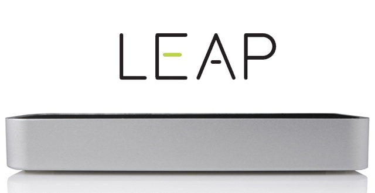
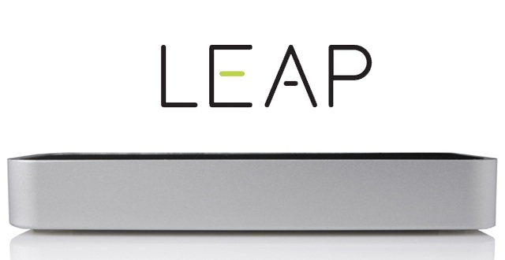
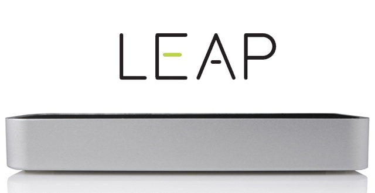
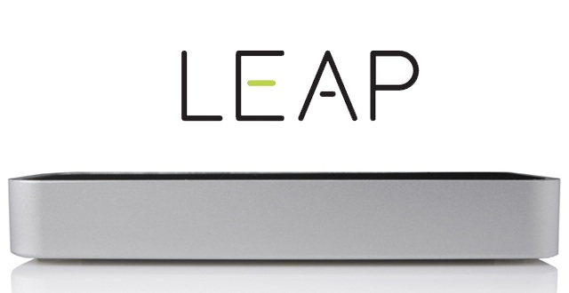
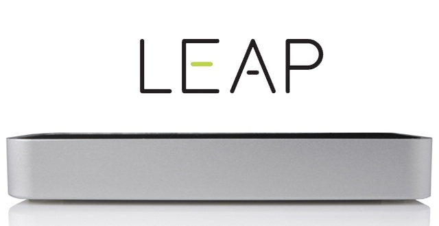

Map Motion
Leap Motion meets Google Maps. In the world's most feature-rich way possible.

Continue
MENU
Direction
Traffic
Transit
Terrain
Basic Movement
Grab the map with one hand to pan around.
Draw a clockwise circle with your index finger to zoom in.
Draw a counter-clockwise circle with your index finger to zoom out.
Streetview
Palm up to enter streetview wherever your focus is.
Swipe up and down to go forward and backwards, respectively.
Palm down with both hands to exit streetview.
Points of Interests
Palm down with both hands to show all points of interest near your focus.
Directions
Tap to place the starting location
Tap once more, somewhere else, to place the end location. The shortest path between the two markers should come up.
Tap again, as many as you want, to place waypoints between the path.
Poke the screen to clear all dropped markers.
Menu
Clap to bring up the menu.
Results
More results
Points of Interests
Free domain name provided by
 
